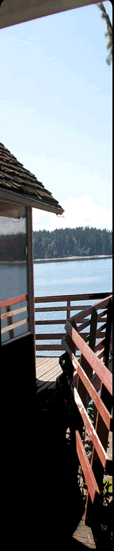

 |
Professional Caretakers for over 10 years, Scott and Coral Barry (and family) relocated to Harstine Island in October of 2008. Their first caretaker position was at a prestigious Horse Ranch called Equi Satori. Nestled in the heart of the wine country in Northern California, Equi Satori is home to both Arabian and Andalusia horses. Living in the caretaker cottage, the Barry’s were responsible for providing all the maintenance and security for the 10 acre ranch. Learning the ropes regarding horses was second nature to them, and they both soon branched out to other ranches (Skyhorse and Strozzi Ranch) to lend support and gain more experience in their spare time.
|
Island Caretaking Services provides secure, professional property monitoring day and night. We specialize in four areas: 1. Home patrols, to your location during the day or night. (daily, weekly or monthly) We will alert authorities if there are any suspicious activities in and around your property. 2. Gate checks and installations of gates to insure no one will compromise the security of your gate on the property. 3. Placements of our own certified caretakers in your unoccupied cabin or vacation home if you feel the need to have a presence there. Caretakers will also offer home improvements if the property owner needs anything on the property. 4. Installations of other security features such as motion detector lights or security systems. Home and land security should be your number one priority no matter where you live. The odds are stacked against you if you own a vacation home that you don't live in. Homes that are occupied are less likely to be targeted by burglers. Burglary and theft are on the increase due to our sagging economy. With Island Caretaking Services you can balance the odds in your favor. Please call us today for a no obligation appointment to let our specialist do an in-home evaluation. Licensed and bonded. |
© 2010 Team Barry All Rights Reserved